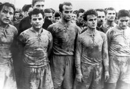
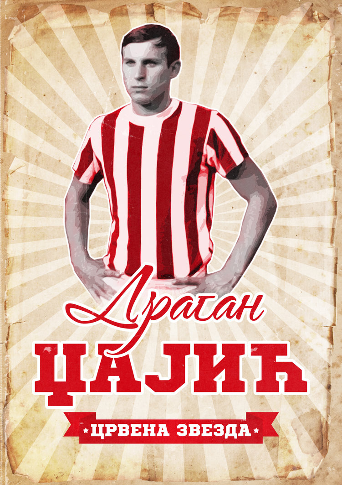
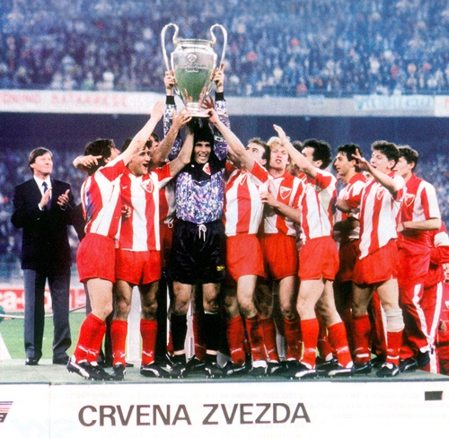

Спортско друштво Црвена Звезда
Спортско друштво Црвена ЗвездаСД Црвена звезда
(Оснивање спортског друштва)
Баш као и све велике приче, тако и ова наша, има скроман почетак. Током фебруара 1945. године омладинци, чланови Уједињеног савеза антифашистичке омладине Србије почели су припреме за оснивачку скупштину једног омладинског фискултурног друштва са циљем да буде састављено од разних спортских секција. Оснивачи су дуго дискутовали око тога какво би име ваљало дати новом спортском колективу. Кумови су били Слободан Ћосић и Зоран Жујовић. Младост или Ударник, Торпедо или Динамо, можда Локомотива …И коначно, Звезда. Не. Црвена звезда!
Током фебруара 1945. године омладинци, чланови Уједињеног савеза антифашистичке омладине Србије почели су припреме за оснивачку скупштину једног омладинског фискултурног друштва са циљем да буде састављено од разних спортских секција. Оснивачи су дуго дискутовали око тога какво би име ваљало дати новом спортском колективу. Кумови су били Слободан Ћосић и Зоран Жујовић. Младост или Ударник, Торпедо или Динамо, можда Локомотива …И коначно, Звезда. Не. Црвена звезда!
У великој дворани старог ДИФ-а у Делиградској 27, 4. марта 1945. године званично је основано Омладинско фискултурно друштво Црвена звезда. Одређене су и боје: црвено-плаво-бело са белом петокраком звездом на црвеној мајици – дресу.
Тог поподнева остварена је и прва спортска победа. Фудбалери Црвене звезде играли су против екипе Првог батаљона Друге бригаде КНОЈ-а и славили са 3:0. Утакмица је одиграна на игралишту “Студента” пред 3.000 гледалаца. Поред фудбалске, Друштво је имало још седам секција: кошаркашку, стоно-тениску, шаховску, пливачку, атлетску, одбојкашку и веслачку. Фудбалерима и атлетичарима припао је терен С. К. Југославије, кошаркаши и одбојкаши добили су терене боб-клуба на малом Калемегдану, веслачи и пливачи зграду на Ади Циганлији. 
Одлучено је да просторије Друштва буду у улици Краља Милутина 2, у једној соби Градског одбора УСАОС-а. За првог председника је изабран Ђорђе Паљић, за потпредседнике Зоран Жујовић и Слободан Ћосић, за секретара Љубиша Секулић, за благајника Душан Богдановић, за економа Предраг Ђајић.
Позив на упис у спортски клуб Црвена звезда објавио је дневни лист “Политика” 7. марта 1945. године. Остало је – историја…
Звезда је рођена
(1945-1955)
 Други светски рат се коначно завршио. Београђанима се полако враћала нада, и све чешће су мирно спавали и лепо сањали. Јутро је донело идеале, а дан идоле који су махом били обучени у црвено-бело. Једни су “терали лопту”, други подно Калемегдана убацивали кошеве, трећи пребацивали лопту преко мреже…И све што се дешавало било је – први пут. Фудбалери Црвене звезде добили су прву утакмицу против ривала у црно-белом који ће ускоро израсти у вечитог. Копачке су носили џентлмени, а највећи међу њима био је Рајко Митић. Три узастопно освојена Купа био је увод у прву шампионску титулу, којој се убрзо придужила и друга.
Други светски рат се коначно завршио. Београђанима се полако враћала нада, и све чешће су мирно спавали и лепо сањали. Јутро је донело идеале, а дан идоле који су махом били обучени у црвено-бело. Једни су “терали лопту”, други подно Калемегдана убацивали кошеве, трећи пребацивали лопту преко мреже…И све што се дешавало било је – први пут. Фудбалери Црвене звезде добили су прву утакмицу против ривала у црно-белом који ће ускоро израсти у вечитог. Копачке су носили џентлмени, а највећи међу њима био је Рајко Митић. Три узастопно освојена Купа био је увод у прву шампионску титулу, којој се убрзо придужила и друга.
Уместо речи кошарака, користила се “заменица” – Звезда. У десет година исто толико титула, и момака и девојака. Епитети за опис овог доба су сувишни, довољна су презимена Поповић, Роклицер, Гец, Демшар, Калембер…
Одбојкаши су прву страну књиге клупских успеха отворили кад и фудбалери (1951), с тим што су шампионској титули додали и Куп. Очекивања која су од тренутка постојала испунили су са још два трофеја Купа и другом клупском титулом. Како изгледа бити најбољи у земљи сазнали су рукометаши, тенисери и у више наврата атлетичари и атлетичарке. Подједнако успешни били су и веслачи, који су неретко били први у свим дисциплинама. Почетком педесетих мачеваоцима Звезде није било равних у флорету и мачу. После три освојена екипна првенства почело је са великим поштовањем да се говори о нашем шаховском клубу, баш као и боксерском захваљујући шампиону Миливоју Булату.
Звездане стазе
(1955-1965))
Са друге стране Саве, ону мочвару и трску, почео је да прекрива неки нови Београд. Рокенрол је освајао младе, а на игранке се ишло веспама. Фудбалери Звезде су све чешће били шампиони (пет титула, три Купа), а навијачи су се навикавали и на успехе на међународној сцени. Полуфинале Купа европских шампиона и италијанска Фиорентина били су непремостива препрека. У витрине клуба стигао је први европски трофеј – Дунавски куп. Нови стадион је отворио капије, а на терену се посебно истицао један београдски шмекер, Драгослав Шекуларац. Кошаркашице су стигле чак до 16. титуле, а одбојкаши две године узастопно шампиони. Првенство први пут освајају и одбојкашице и почињу тријумфални низ који је касније закључен са бројем шест. Шампионским звањем хвалили су се и рукометаши, који су се домогли прве дупле круне. Биле су то године за померање граница, за испитивање сопствених лимита. Веселин Мугоша поставио је европски рекорд на две миље, Милија Јоцовић постао је први Југословен који је куглом срушио границе од 17 и 18 метара, а Милица Рајков Нинков донела је клубу чак девет титула првакиње државе. Тениски, пливачки, рвачки и скијашки клуб добили су прве шампионе Југославије. У мачевалачки клуб стигла је Вера Јефтимијадес. Њен долазак гарантовао је титуле у флорету на државним првенствима у деценији која је уследила. Доминирали су мачеваоци, али и боксери који су освајали шампионат као по навици.
Звезда до звезда
(1965-1975)
Талас студентских протеста захватио је свет и стигао у Београд. Недуго за њим, дошао је још један. Он је донео епидемију великих богиња. Између свих тих турбуленција, фудбалери Звезде терали су по старом. Пређашњим титулама додате су још четири, као и три Купа. Освојен је Средњоевропски Куп, и по други пут црвено-бели су играли полуфинале Купа европских шампиона. Ипак, изгубљен је добијен меч против Панатанаикоса. Популарна Маракана је била пуна као „шибица“ против Ференцвароша у полуфиналу Купа победника купова, али даље се није могло. Било је то доба фудбалске владавине једног по све специфичног играча, једанаестице, најбољег- Драгана Џајића.
Морало је да прође 14 година како би кошаркаши заслужили титулу, 11. по реду. Владимир Цветковић до звања првака носио је и гурао најмлађи шампионски тим у југословенској кошарци. Убрзо је дошла и 12. титула, а заслужена су и три Купа. Звезда је створила тим за велике домете, чији је максимум -ипак био „само“ Куп победника купова. Упоредо са мушким, настајала је женска шампионска генерација. Серија изузетних успеха најављена је титулом.
Биле су то године за понос. Звезда се учврстила и на врху југословенске атлетике, а померали су границе могућег и у Европи. Ненад Стекић поставио је европски рекорд у скоку у даљ, а дугим пругама суверено је владао Дане Корица… Доминација је настављена у тенису, пливању, шаху као и у боксу у којем је Звезди после бројних титула у појединачној конкуренијци припала и екипна. Поново регистровани аутомобилски клуб брзо је израстао у најбољи у земљи.
Звезда шампиона
(1975-1985)
Свет се мењао великом брзином. Коначно је завршен рат у Вијетнаму, а Југославију до корена потреса смрт председника Јосипа Броза Тита. Фудбалери Црвене звезде играли су финале Купа Уефа. Трофеј је припао Борусији из Менхенгладбаха, а навијачи су се дуго љутили на италијанског судију. Још четири титуле и три Купа додате су на конто клуба. Клинци су тренирали фудбал због новог идола, Владимира Петровића Пижона.
Кошаркаши Звезде одиграли су своје прво финале Купа Радивоја Кораћа, а звездина породица коначно је добила шампиона Европе. Сјајна генерација предвођена Вукицом Митић победила је првака Мађарске, Б.С.Е . У том златном добу женске кошарке освојено је још шест титула и три Купа. Исти број шампионата припао је и одбојкашицама које су, у међувремену, стигле и до финалног турнира Купа европских шампиона, као и полуфинала Купа победника Купова.
Европом је одзвањало Звездино име. Атлетичари су били неприкосновени на домаћој сцени, а за њих се убрзо сазнало и ван граница земље. У Купу европских шампиона најпре је освојено треће место, да би се недуго затим стигло до степеника више. Црвено-бели су постали клупски вицешампиони Европе захваљујући невероватном: Ненаду Стекићу, Бориславу Писићу, Владимиру Милићу… Тенисерима Црвене звезде није било равних. Освојено је осам титула екипног првака, а у појединачној конкуренцији шампиони су били Драган Савић и легендарни Слободан Боба Живојиновић. Причало се о тенисерима, али и куглашима, а нарочито хокејашима који се пробијају у сам врх домаћег хокеја и освајају Куп Југославије. Звезда је одједном узданица и карате спорта. Екипне и појединачне титуле су постале свакодневница, а убрзо су заслужене и две титуле првака Европе у традиционалном каратеу. Црвена звезда је била најбоља и у мотоциклизму, а веслачи победом у екипном пласману за све категорије на шампионату у Сплиту бележе највећи спортски резултат у историји свог клуба. Већ у првим такмичарским сезонама стрелци Звезде пригрлили су појединачне и екипне титуле.
Златне године и суноврат политике
(1985-1995)
Берлински зид је срушен, Југославија се распадала, а Црвена звезда је слављена као никада пре. Драган Стојковић Пикси збуњивао је противнике фудбалским умећем, славни Реал из Мадрида прошао је као бос по трњу, а Милан је нестао у магли.
Победом у Барију над Олимпиком из Марсеја освојена је Европа, тријумфом у Токију над екипом Коло-Коло покорен је свет. Још једном играла је Звезда полуфинале КЕШ, пет пута освојен је шампионат, а три пута Куп. После 21 године кошаркаши су освојили титулу, а после девет година шампионат је поново припао кошаркашицама које су се још у три наврата показале као најбоље. Одбојкаши су пригрлили два Купа, баш колико и одбојкашице које су играле и завршни турнир Купа Цев и заслужиле две титуле. Рукометаше су две секунде делиле од титуле, а рукометашице су заиграле у елити.Атлетичари су победили у Купу шампиона, а атлетичаркама је припала вицешампионска титула. Биле су то године у којим се причало о најбржој белој штафети, о Драгутину Топићу као јуниорском светском прваку и рекордеру, о Драгутину Топићу као сениорском шампиону у скоку у вис, о бронзи Драгана Перића.
Sampioni 1991-92Женска екипа је поново побеђивала у флорету, а мачеваоци су као по навици освајали појединачне и екипне титуле у сабљи. Боксери Зоран Манојловић и Алекса Милосављевић били су непобедиви у рингу, а Слађан Илић на скијашким стазама. Куглаши су заслужили две титуле, баш колико и ватерполисти, а каратисти су наставили успешан шампионски низ. Аутомобилисти Звезде поново су били најбржи. Јуниорка Ружица Карајовић освојила је у дубл скулу сребрну медаљу, прво одличје југословенског женског веслања у историји, а чудесна Јасна Шекарић поставила је нови светски рекорд. Хокејашима је припала титула и две дупле круне. Стонотенисери су први пут били најбољи у држави, а блистао је Зоран Калинић. И џудисти Звезде са три екипне титуле, и чак 13 појединачних појачавају конкуренцију најбољих у Спортском друштву.